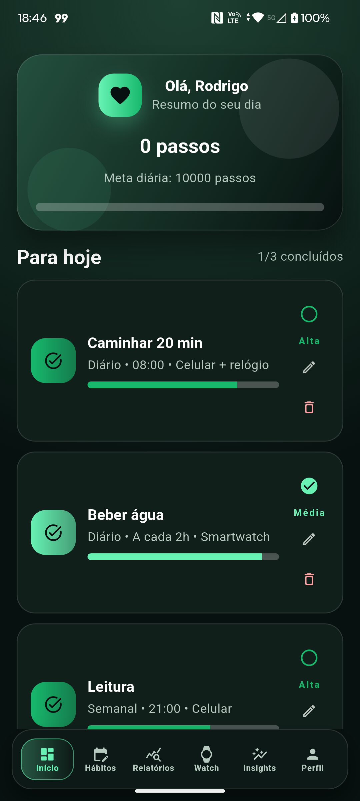
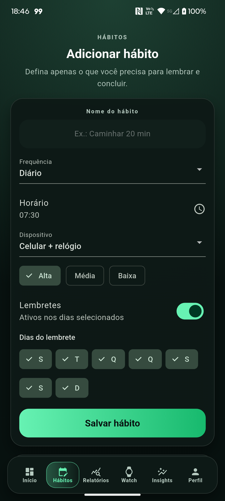
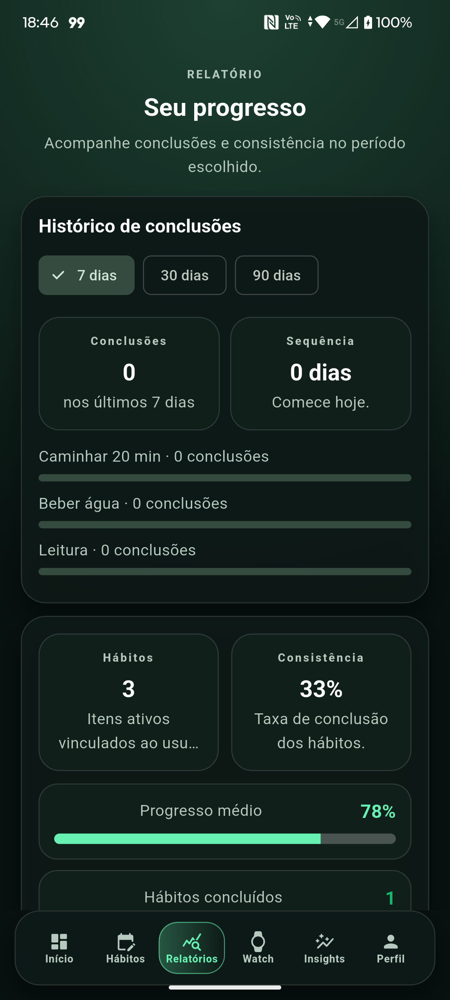

← Voltar ao portfólioPlataformaFlutter para Android DadosFirebase SaúdeHealth Connect QualidadeTestes em Android real
Aplicativo mobile · Bem-estar
RitmoraX
Aplicativo Flutter para organizar hábitos, acompanhar passos, metas, relatórios e conexão com smartwatch em Android.



Funcionalidades
Uma rotina simples de acompanhar.
Hábitos e lembretes
Cadastro, edição, frequência e lembretes configuráveis.
Relatórios úteis
Consistência, sequência de dias e evolução registrada.
Passos e smartwatch
Meta diária comparada a dados do Health Connect.
Arquitetura
Dados protegidos e organizados por conta.
Interface real